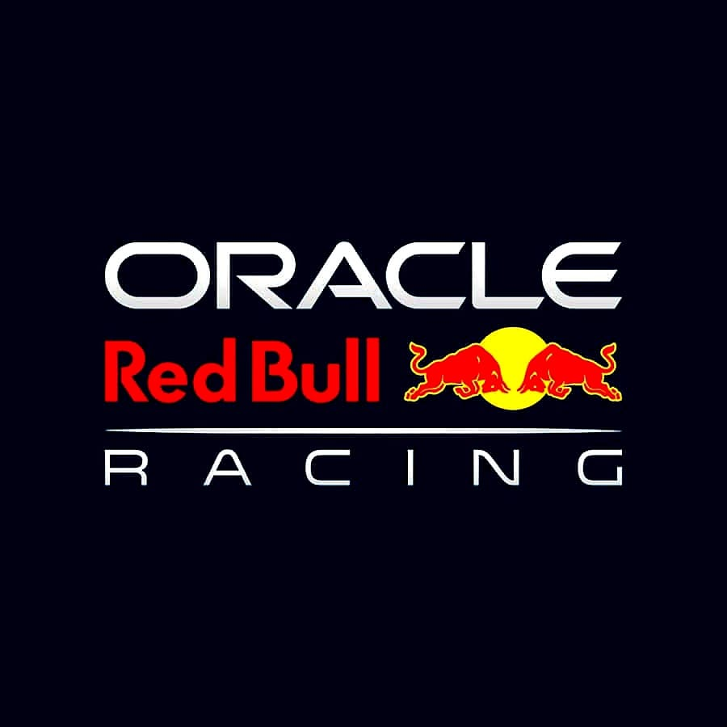

Oracle Red Bull Racing
Red Bull actualmente compitiendo como Oracle Red Bull Racing o tambien conocidos como los Toros Rojos, es uno de los equipo de carreras de Fórmula Uno mas exitosos en los ultimos años. Fundado en el año 2005 siendo propiedad de la compañia de bebidas energeticas Red Bull GmbH. A lo largo de su historia a logrado numerosas victoras, siendo el único equipo que fue capas de terminar con el dominio de siete años consecutivos de Mercedes AMG
Historia y Logros
Durante los ultimos años que Jaguar Racing compitio en la Formula Uno, este adquirio una deuda que no pudieron pagar y fue a finales del año 2004 que Red Bull compro el equipo Jaguar por tan solo un dólar estadounidense sin embargo como parte del acuerdo Red Bull asumio todas las deudas que asendian a 400 millones de dolares. En 2022 Red Bull firmo un acuerdo de patrocinio con ORACLE uno de los gigantes en la industria de software, lo que llevo al equipo a llamarse ORACLE RED BULL RACING. Este acuerdo no solo es financiero, si no que Oracle proporciona al equipo soporte tecnológico, mejorando aspectos como la simulacion y el analisis de datos en tiempo real durante cada carrera de Formula Uno.
Entre 2010 y 2013, Red Bull domino la Formula Uno, obteniendo una cantidad de 41 victorias y logrando obtener 4 campeonatos consecutivos de pilotos y constructores con Sebastian Vettel como piloto estrella. Entre los años 2021 y 2023 el dominio de Red Bull acumulo un total de 51 victorias. En 2021 obtuvieron 11 victorias de la mano de Max Verstappen quien gano en 10 ocaciones y de Sergio "Cecho" Pérez quien solo logro 1 victoria. Este año fue una de las temporadas mas dificiles para Red Bull ya que Mercedes AMG logro darles pelea en los campeonatos de pilotos y constructores. Max Verstappen y Lewis Hamilton llegaron empatados en puntos a la ultima carrera del año. Una lucha que separaba a Max Verstappen de convertirse por primera vez en campeon mundial y a Lewis Hamilton de logar su octavo titulo mundial y convertirse en el mas grande piloto de la historia de la Formula Uno. Aunque Red Bull y Max Verstappen lograron ganar el campeonato de pilotos, Mercedes junto a Lewis Hamilton lograron ganar el campeonato de constructores
Durante 2022 y 2023 fue un total dominio de Red Bull que durante los dos años disputaron 44 carreras lograron un record mundial al ganar 40 de ellas don Max Verstappen demostro su talento obteniendo 34 victorias y Checho Pérez logro 6 victorias, y aunque hay una gran diferiencia entre los dos pilotos cabe aclarar que Checo Pérez tiene como principal objetivo defender la posicion de Max para darle una mayor ventaja sobre los demas rivales.